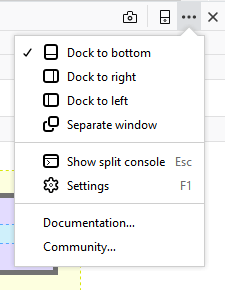
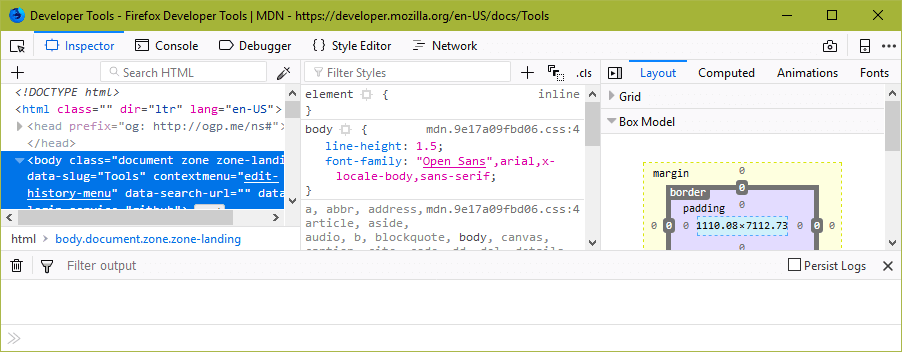
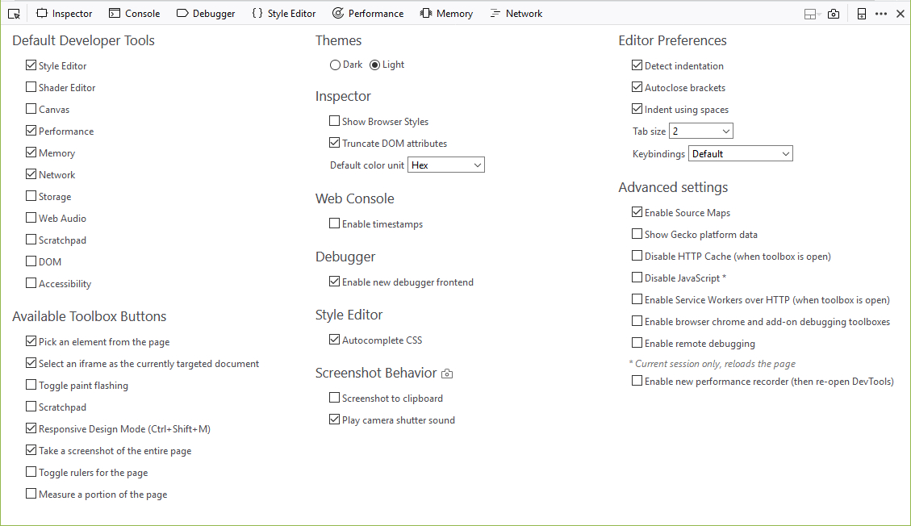
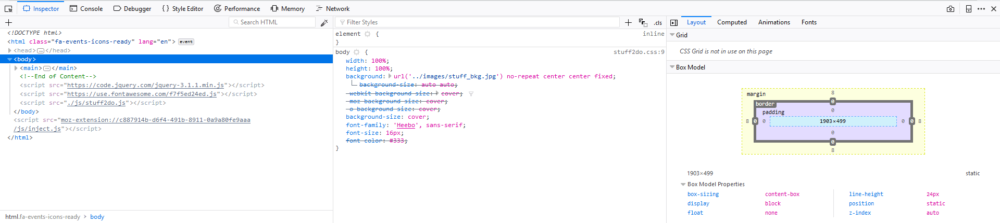
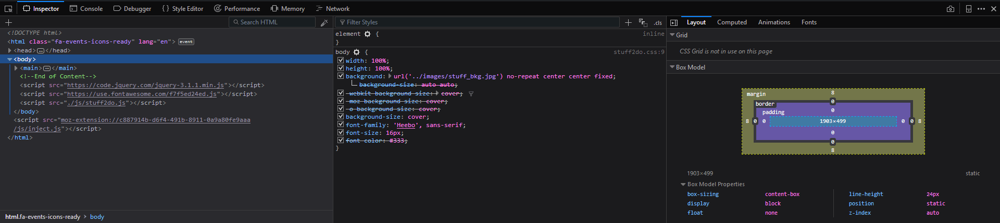

{{ToolsSidebar}}
Beginning with Firefox 62, the icon to open Developer Tools settings has been moved into a menu accessed by clicking/touching ... (the ellipsis) on the right of the tab.

The menu includes settings to control the location of the Developer Tools. You can choose between the default setting at the bottom of the windows, or move the tools to the left or right side of the screen. These settings are particularly useful if you have a widescreen monitor. You can also choose to open the tools in a separate window.
Show split console adds a section at the bottom of the tools showing the console. It makes visible the command line and one or two lines of the console output.

The rest of the settings are on the Developer Tools Settings Pane. To see the settings, open any of the Developer Tools, and then:
The Settings pane looks something like this:

This group of checkboxes determines which tools are enabled in the toolbox. New tools are often included in Firefox but not enabled by default.
This group of checkboxes determines which tools get an icon in the Toolbox's toolbar.
As of Firefox 62, if the option to "Select an iframe as the currently targeted document" is checked, the icon will appear in the toolbar while the Settings tab is displayed, even if the current page doesn't include any iframes.
Note that in Firefox 52 we removed the checkbox to toggle the "Select element" button. The "Select element" button is now always shown.
This enables you to choose one of two themes.
There's a light theme, which is the default:

A dark theme (the default on Firefox Developer Edition):

Settings that apply to more than one tool. There's just one of these:
If Common Preferences is not included in the Settings, Web Console logs can be persisted by using the 'about:config' url in browser address bar, searching for: 'devtools.webconsole.persistlog' then toggling this value to true
Preferences for the CodeMirror source editor, which is included in Firefox and used by several developer tools, including Scratchpad and the Style Editor.
[ or { will cause the editor to insert the matching closing character ] or } for you.Note: This option got removed from the UI in Firefox 56, because this version ships with a new Debugger UI, but it can still be enabled for the old UI by setting the preference devtools.debugger.workers to true.